首頁 › 主題 › 海洋生物
🐠 海洋生物拼圖
小丑魚、河豚、鯨魚、海豚、章魚、水母……這個主題帶孩子潛入海底世界，認識 16 種海洋生物與海底寶藏。
可以選擇 9、12 或 16 片，並切換拼圖形或方塊，由簡單到困難慢慢挑戰。免費、免註冊。
這個主題裡有什麼？（共 16 張）
點選任一張圖片，就可以直接開始拼。
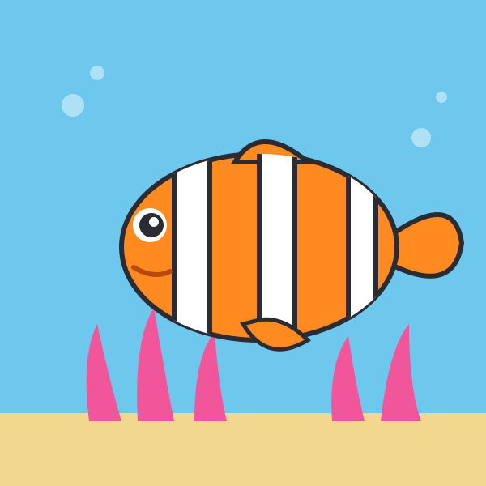
小丑魚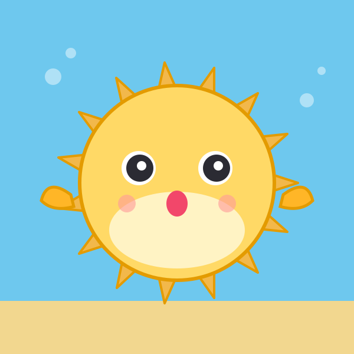
河豚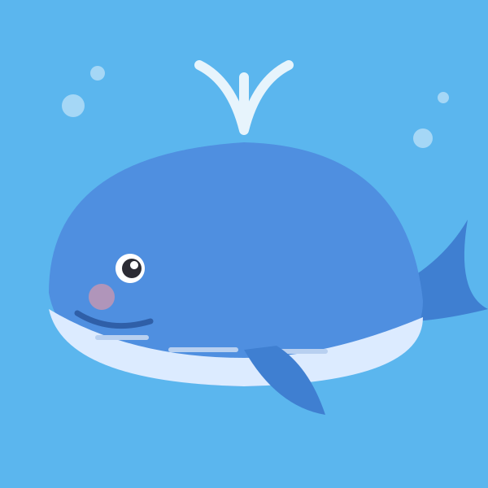
鯨魚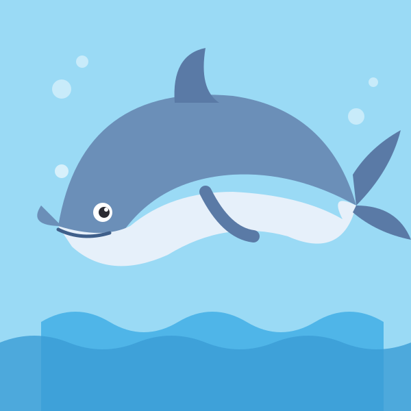
海豚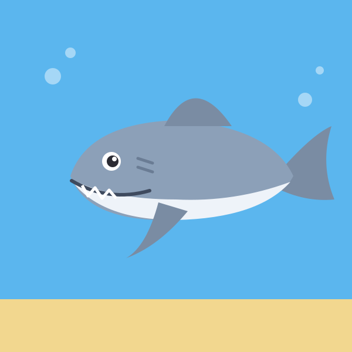
鯊魚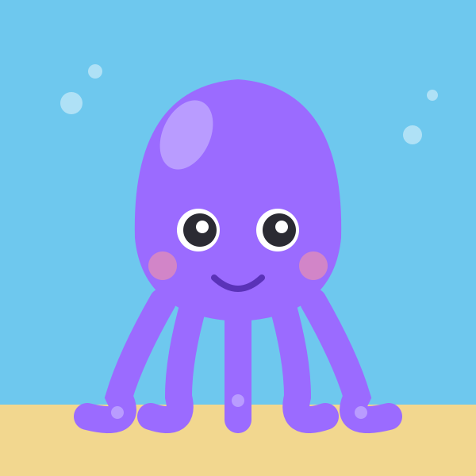
章魚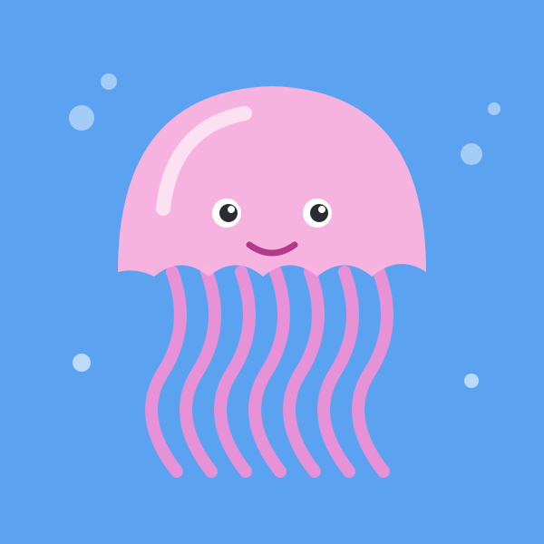
水母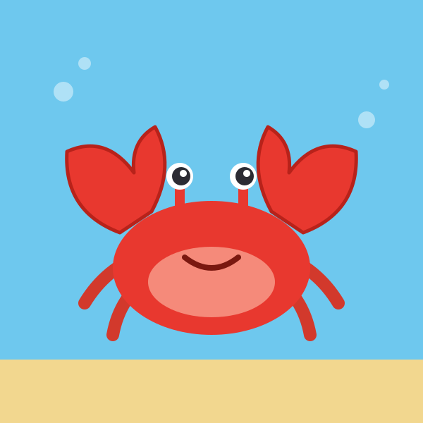
螃蟹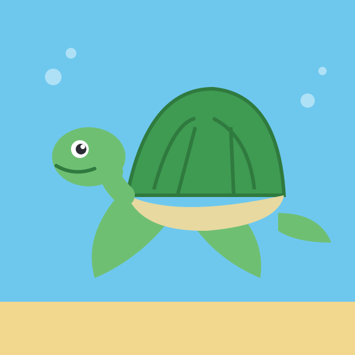
海龜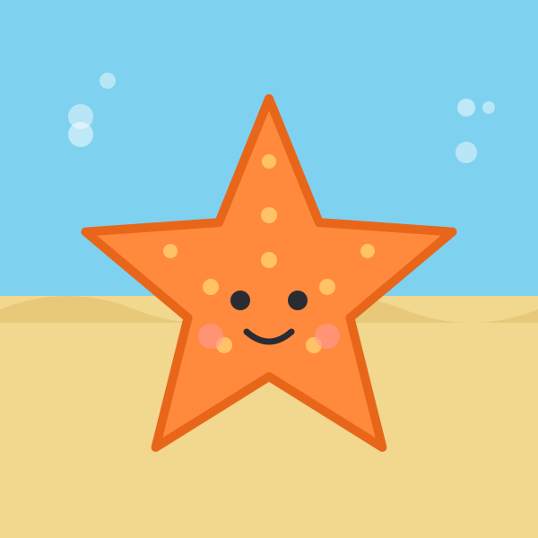
海星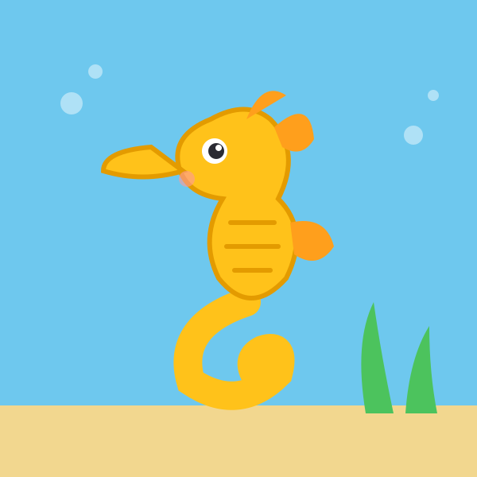
海馬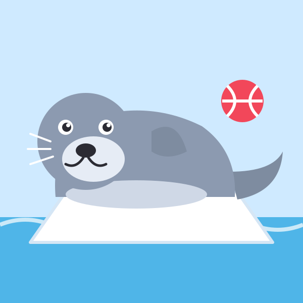
海豹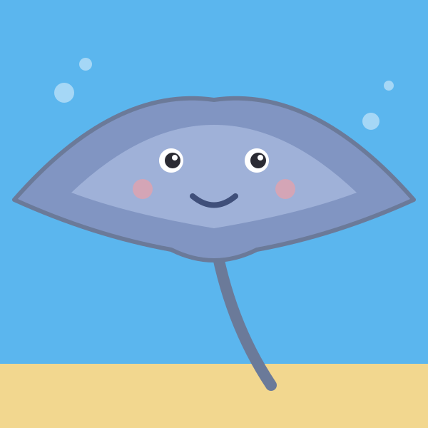
魟魚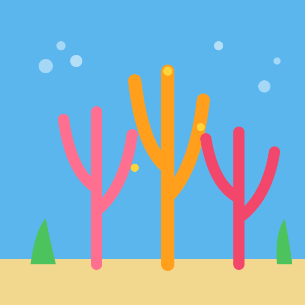
珊瑚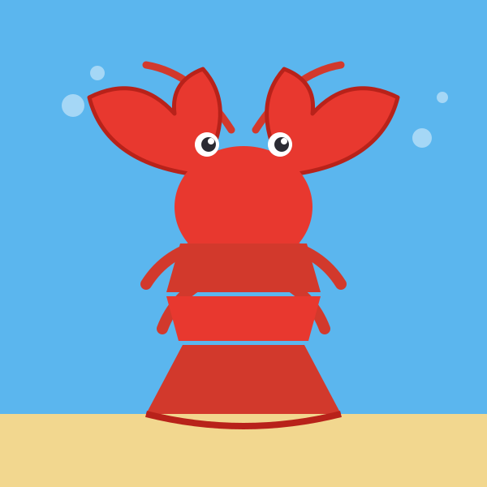
龍蝦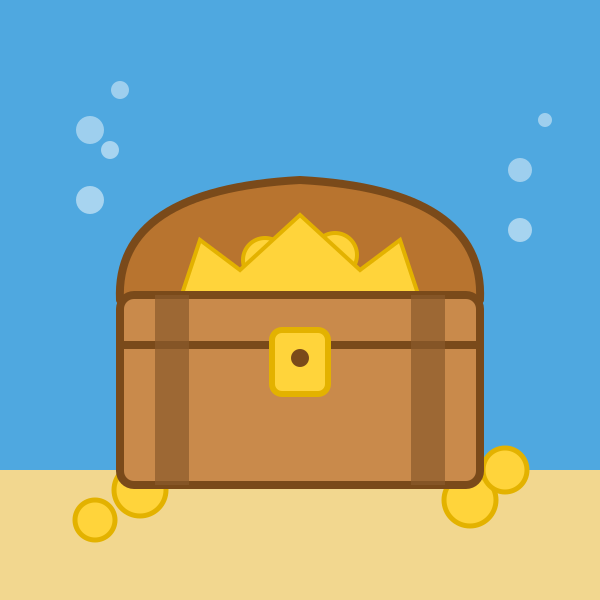
海底寶箱
學習重點
- 認識海洋裡的魚類與其他生物
- 比較大小、形狀與顏色的差異
- 培養愛護海洋的觀念
和孩子一起聊聊
拼完之後，可以試著問孩子：
- 牠是魚嗎？鯨魚和海豚是魚還是哺乳動物？
- 牠是怎麼游泳的？
- 我們可以怎麼保護海洋？（例如：不亂丟垃圾）